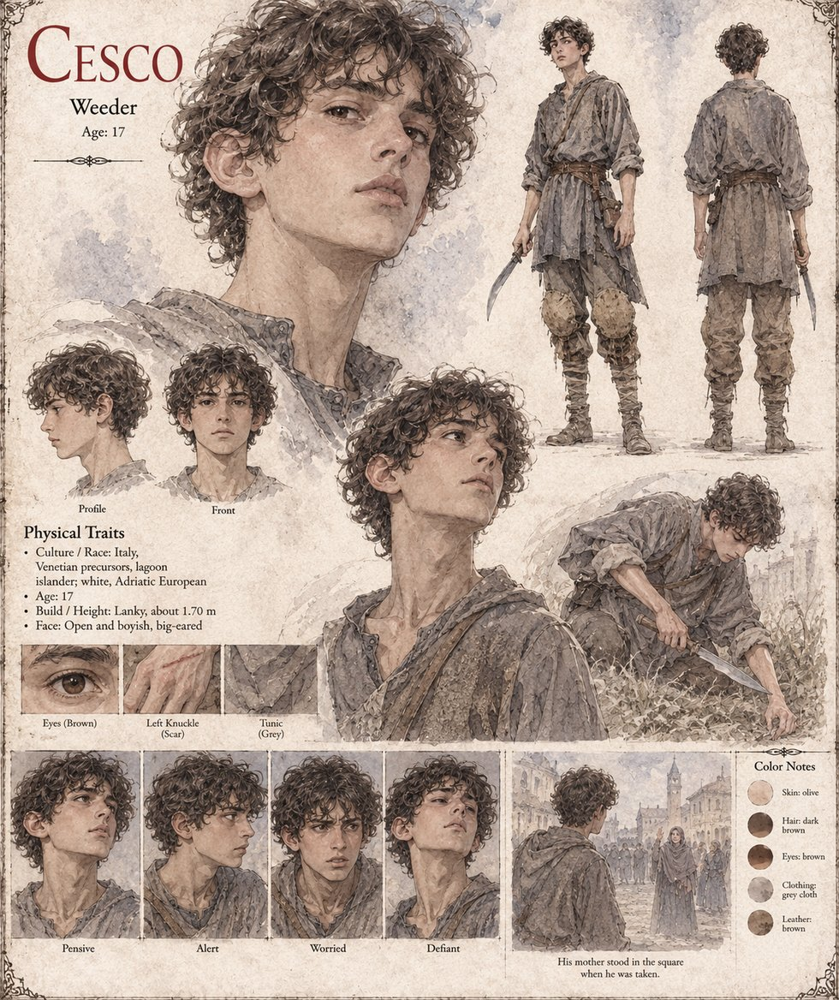

Cesco
Weeder of the Ring · one of the eight taken in the first three weeks of Ferren · 17
On the first of Ferren a hundred and six lamplighters and probationers and volunteers in their grey kneel along the Ring with their knives drawn and cut the pale shoots from the foot of every lamp; one of them is a boy of seventeen named Cesco, who had taken up the knife because his father had done the same work with a spade thirty years before and had never once been troubled by it. By noon the Ring is clean, and by dusk the shoots are up to the ankle again. In the first three weeks of Ferren eight of the men who do the weeding are taken at dusk by seedlings that have grown, in a night, past the height of a knife, and eight voices are sung back to the square on the following evenings, each heard, this time, from inside the Ring. Cesco is one of the eight. His mother stands at Lamp Seven the following dusk and hears her son’s voice finish, with terrible clarity, a sentence about supper that he never in his life got to finish. In her brown book Agata enters Lamplighters eaten: 8.
The manuscript gives his age (seventeen), his father’s spade, the knife and the sentence about supper, and no height, build, face, hair or eye colour. The sheet’s lanky build of about 1.70 m, open boyish big-eared face, brown eyes, dark brown hair, scarred left knuckle, grey tunic, curved weeding knife, sacking knee-pads and wrapped boots are its own, as are its panels Pensive, Alert, Worried and Defiant and its unlabeled panel of him kneeling and cutting a grass tuft. Its scene His mother stood in the square when he was taken. condenses the manuscript, which puts her at Lamp Seven on the dusk after, when his voice is heard; the sheet draws a hooded woman in a plaza with a bell-tower behind her.
“who had taken up the knife because his father had done the same work with a spade thirty years before and had never once been troubled by it”
Appears In

Related Subjects


Related Records

On the first of Ferren, in a bright, windy forenoon, a hundred and six lamplighters, probationers and volunteers in grey kneel along the Ring with their knives drawn, and the shoots at the foot of every post came up in the hand like wet string. By the second bell Agata’s chalked squares at Lamp Seven record a pale green fuzz at the foot of the post, and by dusk it is up to the ankle. Cesco, seventeen, is one of eight weeders taken in the weeks that follow.